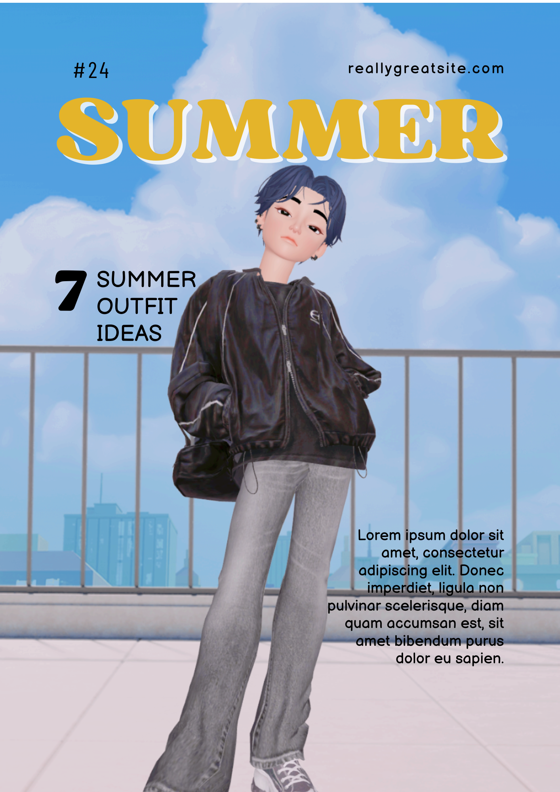
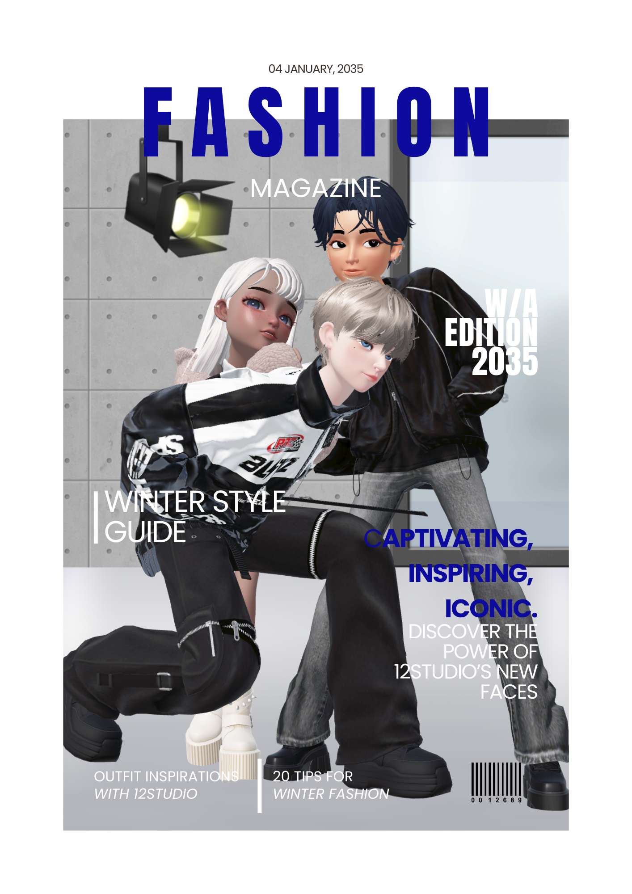
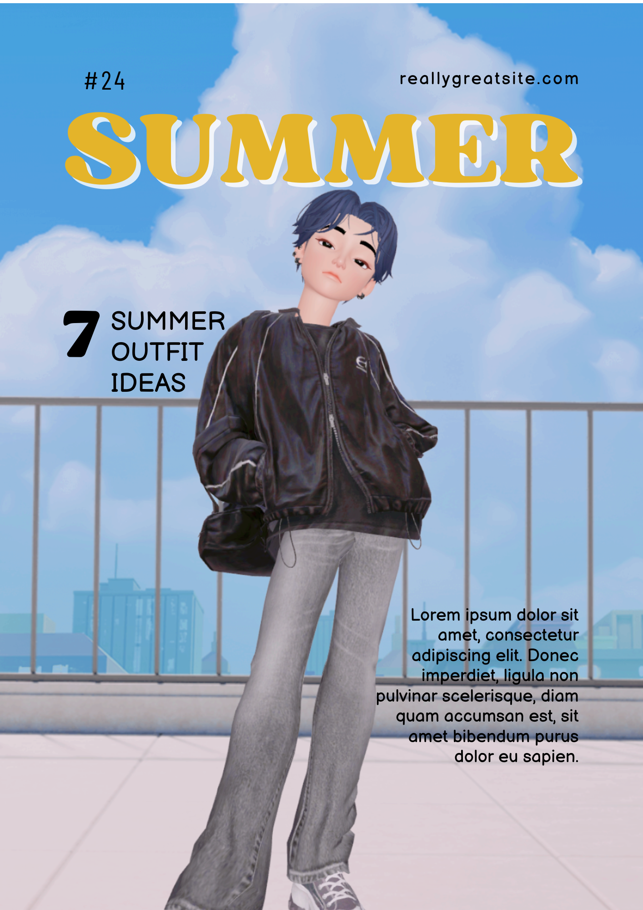
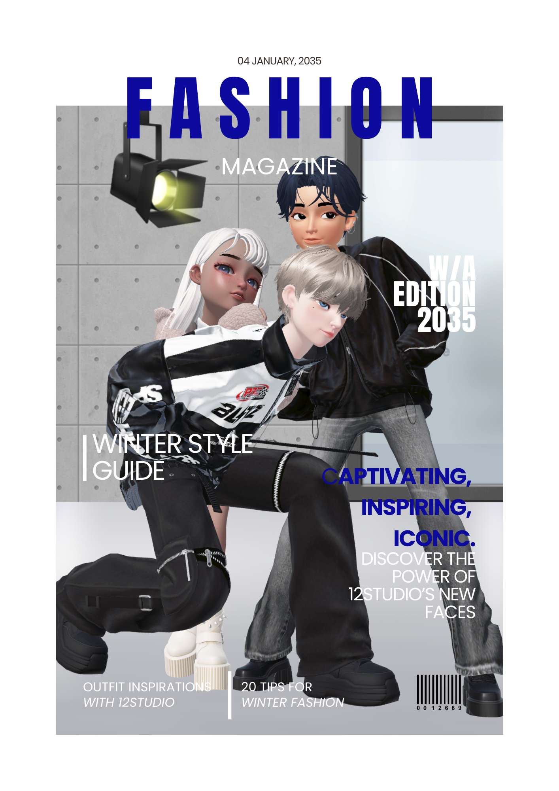

這是我 3 天內打造的網站！
正在學習 UX/UI 設計 & 前端開發
電子手帳 + 推活日曆的結合
幫助粉絲整理和規劃推活行程，記錄自己的應援旅程。
飯圈成員（簽售黨、演唱會黨、追活動的粉絲）
「推しログ」是一款專為粉絲設計的推活管理 App，讓粉絲能夠：
Just Speak 旨在幫助華語學習者在真實情境下進行口說練習，透過互動式對話模擬提升流暢度，並降低開口說中文的焦慮。
Just Speak 針對華語學習者的口說困難，設計了真實對話模擬系統。
讓用戶能夠透過 AI 對話進行實戰練習，並即時獲取發音和用詞建議。
12 Studio 是一個融合 ZEPETO 虛擬形象 與時尚設計 的創意網站，呈現虛擬與現實交錯的時尚美學。
透過 Wix 平台打造，網站模擬一個時尚品牌工作室，主角為我的 ZEPETO 人偶與朋友們，展現個性化的時尚風格與創作理念。
Just Speak 針對華語學習者的口說困難，設計了真實對話模擬系統，讓用戶能夠透過 AI 對話進行實戰練習，並即時獲取發音和用詞建議。
可以清晰、簡潔、整齊，呈現我的作品及個人特質。
平面設計如：應援手幅、雜誌排版等

 



Assistant Chinese Language Teacher︱NSLI-Y
NTHU
Assistant Chinese Language Teacher︱TISLP - Fulbright
NTHU
Chinese Language Teacher︱Yuahan Xuetang
NTHU
one-on-one Chinese conversation course instructor︱online
the university of virginia & national chengchi university
TA
national tsinghua university
MA│Department of Chinese Literature
National Tsing Hua University
Exchange Student
Tokyo University of Foreign Studies
BA│Department of Chinese Literature
National Chung Hsing University
Email: eden041113@gmail.com